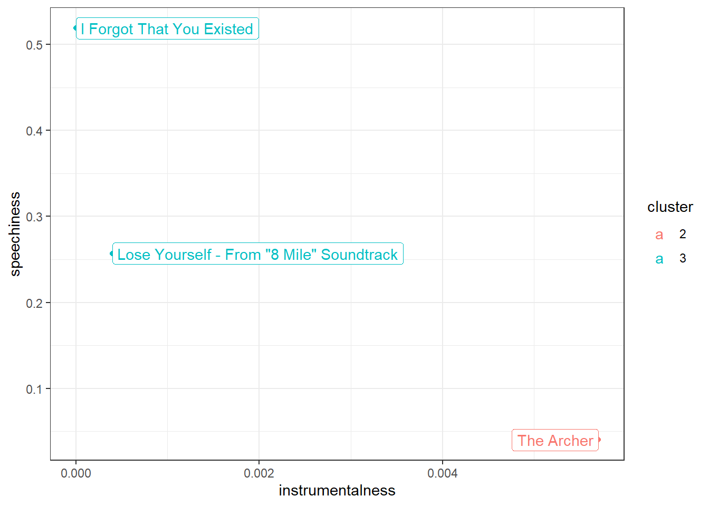
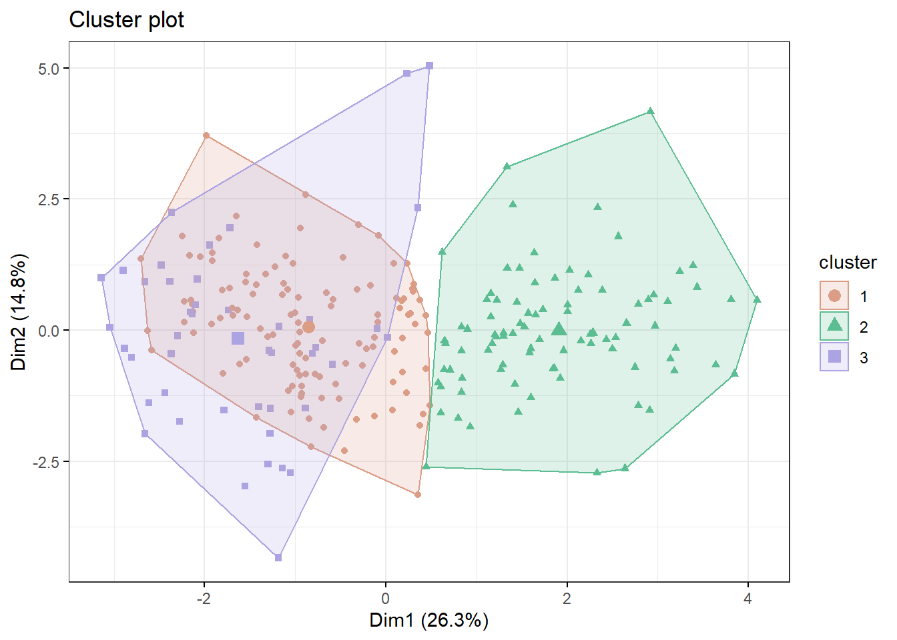

9 Cluster analysis

In the previous chapter on factor analysis we tried to reduce the number of variables or columns by identifying underlying dimensions. In order to do so we exploited the fact that some items are highly correlated and therefore might represent the same underlying concept (e.g., health benefits or social benefits). Similarly, in cluster analysis we again do not distinguish between dependent and independent variables. However, in the case of cluster analysis we do not try to reduce the number of variables but the number of observations by grouping similar ones into “clusters.” What exactly defines “similarity” depends on the use case. In the case of music audio features of songs might be used to identify clusters of similar songs (similar to the genre classification) which can be used for recommendation systems. Other use cases are customer segmentation and anomaly (e.g., fraud) detection.
Let’s try to create a recommendation system using track features. In our data we have the ISRC, name of the track, name of the artist and audio features of the track. We are going to use the audio features to cluster tracks together such that given one track we can easily identify similar tracks by looking at which cluster it belongs to.
load(url("https://github.com/WU-RDS/MRDA2021/raw/main/trackfeatures.RData"))
# remove duplicates
tracks <- na.omit(tracks[!duplicated(tracks$isrc), ])To get an idea of how clustering might work let’s first take a look at just with two variables, energy and acousticness, and two artists, Robin Schulz and Adele. We immediately see that Adele’s songs are more to the top left (high acousticness, low energy) whereas Robin Schulz’s songs are mostly on the bottom right (low acousticness, high energy).
library(ggplot2)
library(stringr)
robin_schulz <- tracks[str_detect(tracks$artistName, "Robin Schulz"), ]
robin_schulz$artist <- "Robin Schulz"
adele <- tracks[str_detect(tracks$artistName, "Adele"), ]
adele$artist <- "Adele"
example_tracks <- rbind(robin_schulz, adele)
ggplot(example_tracks, aes(x = energy, y = acousticness, color = artist)) +
geom_point() +
theme_bw()
9.1 K-Means
One of the most popular algorithms for clustering is the K-means algorithm. The “K” stands for the number of clusters that are specified as a hyperparameter (more on how to set that parameter later). The algorithm then tries to separate the observations into K clusters such that the variance of the features (e.g., our audio features) is minimized. Therefore, it is important to scale all variables before performing clustering such that they all contribute equally to the distance between the observations. Intuitively the algorithm groups observations by iteratively calculating the mean or center of each cluster, assigning each observation to the cluster with the closest mean and re-calculating the mean… The algorithm has “converged” (i.e., is done) when the assignments no longer change.
Let’s try it out with our two artists. In order to perform clustering we first have to remove all missing values from the used variables as for those we cannot calculate distances. Because we know that there are two artists in the sample we will start with two clusters.
tracks_scale <- data.frame(artist = example_tracks$artist, energy = scale(example_tracks$energy), acousticness = scale(example_tracks$acousticness))
tracks_scale <- na.omit(tracks_scale)
kmeans_clusters <- kmeans(tracks_scale[-1], 2)
kmeans_clusters$centers## energy acousticness
## 1 -1.439466 1.3234653
## 2 0.500684 -0.4603358The kmeans function returns, among other statistics, the centers of each cluster and a cluster identifier for each observation which we can add to our original data. In our case one cluster’s center is rather low in energy and high acousticness and the second one has higher energy and lower acousticness.
In our plot we can add a color for each cluster and a different marker shape for each artist. We observe that cluster 1 corresponds mostly to Robin Schulz songs and cluster 2 mostly to Adele. Alternatively we can also look at the counts in each cluster per artist using the table function.
tracks_scale$cluster <- as.factor(kmeans_clusters$cluster)
ggplot(tracks_scale, aes(x = energy, y = acousticness, color = cluster, shape = artist)) +
geom_point(size = 3) +
theme_bw()
table(tracks_scale$artist, tracks_scale$cluster)##
## 1 2
## Adele 14 9
## Robin Schulz 2 37In the previous example it was easy to set the number of clusters. However, if we use all artists in our data the best value for “K” is not immediately obvious. Surely some artists should be in the same cluster. We can user the NbClust package to determine the best number of clusters according to various indices (see ?NbClust). First we scale all our variables and then we use the scaled versions to determine “K.” To make computations faster we will use songs by 5 famous artists. Then we count how many indices would choose a certain number of clusters. The two best candidates are 3 clusters, chosen by 13 indices and 2 clusters, chosen by 5 indices.
library(NbClust)
famous_artists <- c(
'Ed Sheeran',
'Eminem',
'Rihanna',
'Taylor Swift',
'Queen'
)
famous_tracks <- tracks[tracks$artistName %in% famous_artists, ]
famous_tracks_scale <- scale(famous_tracks[4:ncol(famous_tracks)])
set.seed(123)
opt_K <- NbClust(famous_tracks_scale, method = "kmeans", max.nc = 10)

table(opt_K$Best.nc["Number_clusters",])##
## 0 2 3 4 8 10
## 2 5 13 1 1 4We can now proceed as before with running the k-means algorithm. Looking at the centers for each of the clusters could give us an indication for the types of songs we can expect in each of them (recall that they are assigned based on their distance to the center). Cluster 2, for example will include acoustic soungs and cluster 3 includes more energetic, faster songs.
kmeans_tracks <- kmeans(famous_tracks_scale, 3)
kmeans_tracks$centers## danceability energy loudness mode speechiness acousticness
## 1 0.2758301 0.4526214 0.4853302 -0.1461378 -0.2576401 -0.5618965
## 2 -0.5385548 -0.9566495 -0.8742383 0.2632910 -0.4147683 0.9772843
## 3 0.3678342 0.7543900 0.4954862 -0.1492974 1.5546155 -0.5015270
## instrumentalness liveness valence tempo duration_ms
## 1 0.06266324 -0.2524251 0.4012080 0.03789976 -0.09047459
## 2 -0.06816719 -0.2728148 -0.6158085 -0.17761023 0.09754255
## 3 -0.02849344 1.2469257 0.1885188 0.26482862 0.04295692To get a quick overview of the centers we can user a radar plot. This allows us to quickly observe similarities and distinguishing features of clusters.
library(ggiraph)
library(ggiraphExtra)
centers <- data.frame(kmeans_tracks$centers)
centers$cluster <- 1:3
ggRadar(centers, aes(color = cluster), rescale = FALSE) +
ggtitle("Centers") +
theme_bw()
We can use a barplot to visualize the number of songs an artist has in each cluster. While Eminem’s songs are mostly in cluster 3, Taylor Swift’s and Ed Sheeran’s are mostly in cluster 1 and 2.
famous_tracks$cluster <- as.factor(kmeans_tracks$cluster)
ggplot(famous_tracks, aes(y = cluster, fill = artistName)) +
geom_bar() +
theme_bw()
table(famous_tracks$artistName, famous_tracks$cluster)##
## 1 2 3
## Ed Sheeran 23 34 2
## Eminem 10 3 32
## Queen 9 9 6
## Rihanna 13 1 1
## Taylor Swift 64 44 3We could use the clustering to make recommendations on both the artist and song level (assuming that people like songs with similar audio features). If you like “Lose Yourself” by Eminem (cluster 3), we would recommend “I Forgot That You Existed” (cluster 3) bu not “The Archer” (cluster 2) by Taylor Swift.
recommendation <- famous_tracks[str_detect(famous_tracks$trackName, "Lose Yourself|I Forgot That You Existed|The Archer"),]
recommendation[c("trackName", "artistName", "cluster")]ggplot(recommendation, aes(instrumentalness, speechiness, color = cluster)) +
geom_point() +
geom_label(aes(label=trackName), hjust = "inward") +
theme_bw()
We can color points in a scatterplot by cluster to get a partial picture (2 variables instead of the full range used in k-means) of what distinguishes the clusters. Clusters 1 and 2, for example, are mostly different in terms of energy and valence.
ggplot(famous_tracks, aes(x = energy, y = valence, color = cluster)) +
geom_point() +
theme_bw()
9.2 Hierarchical Clustering
Another popular clustering algorithm is hierarchical clustering. It is based on the idea that similar clusters can be merged. It starts off assigning each observation, in our case song, its own cluster. In a second step the two most similar or closest songs are combined to a single cluster. Then, in each iteration, the two most similar clusters are merged until all songs are in a single cluster. Hierarchical clustering requires us to provide a distance matrix rather then the song features. Distances between observations can be calculated using the dist function. There are multiple distance measures that can be used to calculate the distances. One of the most popular ones, and also the default, is the euclidean distance, defined as the square-root of the sum of squared element wise differences between two vectors. So in our case to calculate the distance between two songs we would take the squared difference in valence, danceability, liveness and so on, sum them up and take the square root of the sum. To get a better overview let’s use songs by Pink Floyd and Rihanna in this example.
pf_ri <- tracks[tracks$artistName %in% c("Pink Floyd", "Rihanna"),]
pf_ri_scale <- scale(pf_ri[,4:ncol(pf_ri)])
rownames(pf_ri_scale) <- pf_ri$trackName
hclust_tracks <- hclust(dist(pf_ri_scale))
plot(hclust_tracks)
Again, we have to decide on the number of clusters. Based on a visual inspection of the hierarchy, choosing 4 clusters seems reasonable. We can get cluster assignments by “cutting the tree” such that we get the desired number of clusters. With hierarchical clustering we do not get the centers of each cluster as a return value as it is not calculated by the method. However we can reduce the clusters manually by calculating the mean of each variable for each cluster using the aggregate function. The . in the formula stands for “all other variable. As we can see in the middle of the dendrogram there will be two small clusters with 1 and 2 songs in them respectively (”Needed me” in cluster 1 and “dogs,” “pigs” in cluster 4).
hclusters <- cutree(hclust_tracks,4)
pf_ri_hier <- data.frame(pf_ri_scale)
pf_ri_hier$cluster <- as.factor(hclusters)
hier_centers <- aggregate(. ~ cluster, pf_ri_hier, mean)
ggRadar(hier_centers, aes(color = cluster), rescale = T) +
ggtitle("Centers") +
theme_bw()